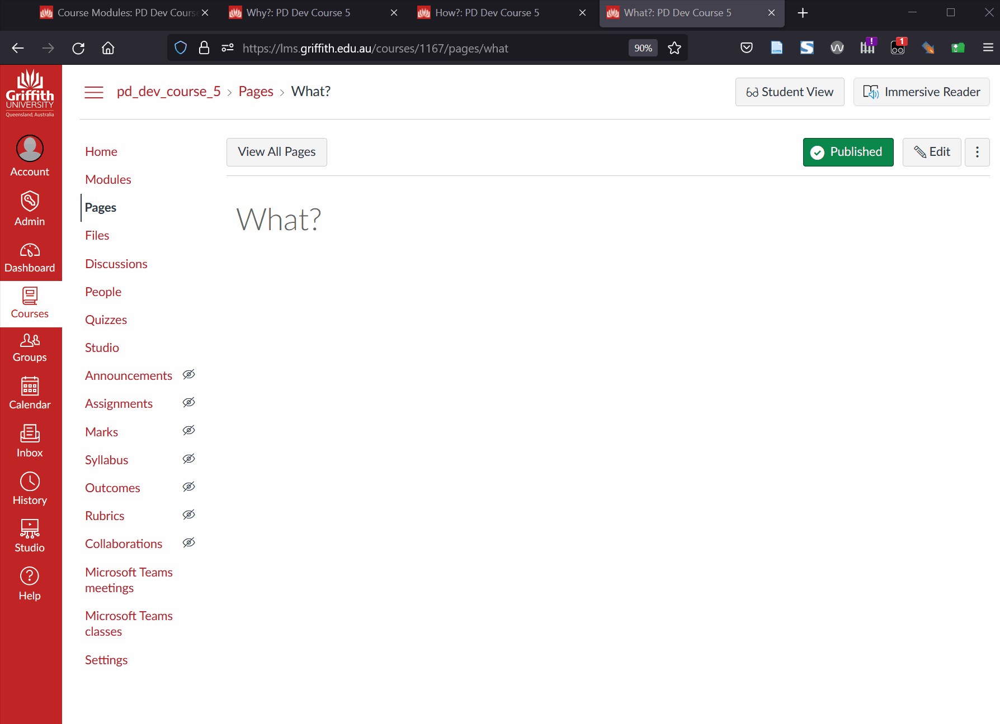
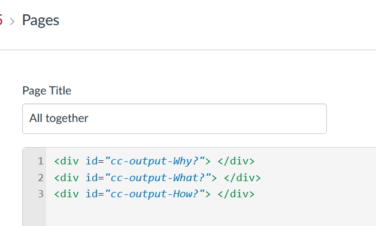
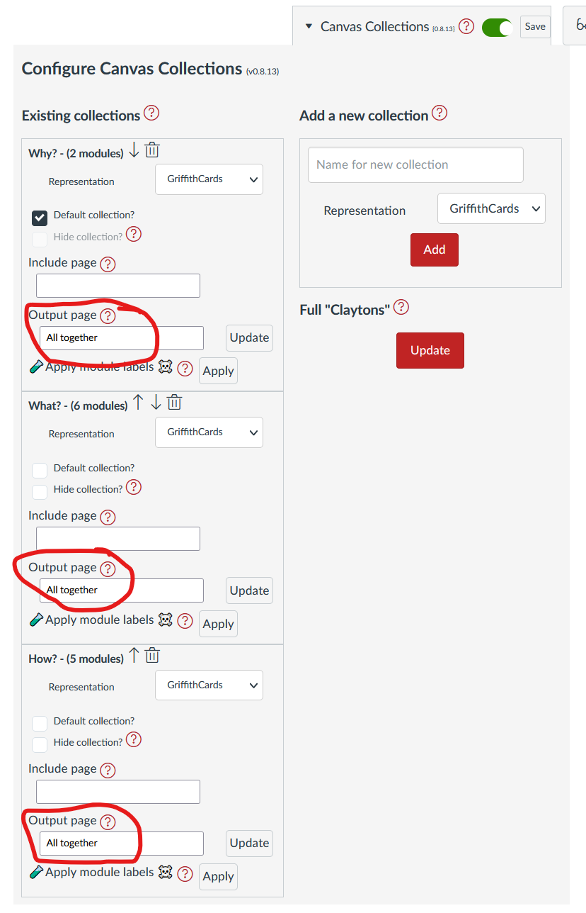
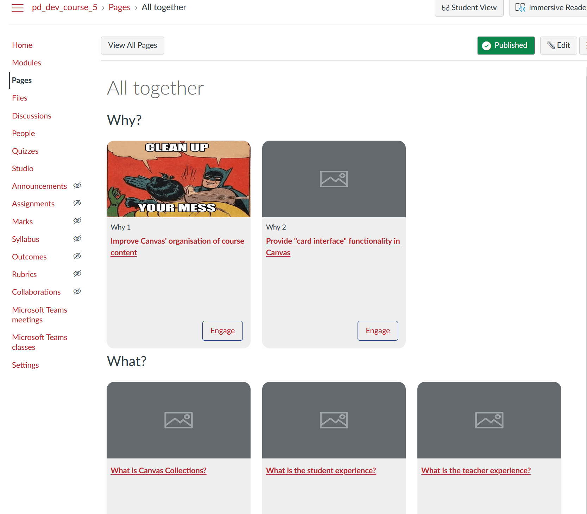
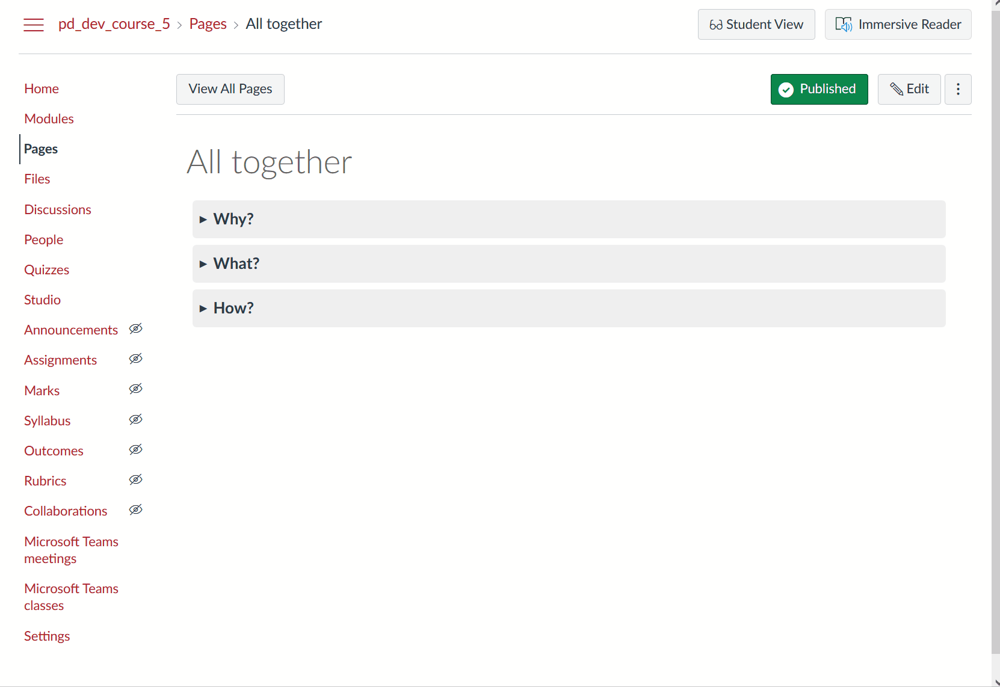

Multi-collection, one page Claytons
Claytons Collections provides a way to create a Canvas page that contains a Collection's representation. It provides two methods you can use:
- Update a single page using the output page
- Update multiple pages using Full Claytons
Typically, this is used to place each collection's representation onto its own page. For example, the following animated image that shows the process of placing the representations for three collections (Why?, What?, and How?) onto three separate pages (with the same names).
The following shows how you can place the representations for these same three collections (Why?, What?, and How?) onto a single page.

The Process
The process for doing this is almost the same as used on the setting up Claytons Collections page.
- Configure Canvas Collections
- How many collections for Claytons?
- 🆕 How many pages?
- Create (or identify) the page(s) required.
- Set up the page(s)
- Specify the collection's output page
- Use Collections to update the pages
Once the basics are setup, you can also make it fancy
Configure Canvas Collections
This only works if Collections is configured for your course. The example here will be using the same course and Collections configuration as the previous example.
How many collections for Claytons?
As with the previous example the following will use all three available collections. You can choose as many as you like, but since the aim is to include the representations from multiple collections, you'll need at least two.
🆕 How many pages?
Previously, the example used a single page for each collection. This time, the example will use a single page for all three collections.
If you're are using less than one page per per collection, you'll need to perform the "set up the page(s)" step below.
Create (or identify) the page(s) required.
Currently, Collections will not create the pages for you. You'll need to be sure that all the required Canvas pages exist.
Set up the page(s) - add each collection's output div
Background
When Claytons Collections updates a Canvas page it places the HTML for that collections' representation into a HTML In the image, the If you want to have the representation of more than one collection on a single page OR if you want to specify exactly where the representation is placed on the page, you'll need to add a For this example, all three collections will be placed on a single page titled  As with the previous example, the output page for each collection needs to be specified. This time, the output page for each collection will be the  There are two options that could be used to update the pages summarised in the following tabe. ❗️ Note: If placing multiple collections onto a single page, you probably do NOT want to use Full Claytons. Hence the approach shown in the following animated image uses the update output page option. The image shows that each collection can be updated and its results checked before proceeding. With all this set up, you now have a Canvas page into which you can update the collections' representations. At the moment, the page just has each representation one after the other, you may want to make it a bit fancier than that by, for example Or some other idea you can translate into HTML. All that's need to achieve this is to edit the All together page and place appropriate headings between each collection's representation.  Or with another bit of fancy HTML you can make accordions. <div id="cc-output-How?">. The first part of the identifier is consistent cc-output- for Canvas Collections output. The last part of the identifier is the name of the collection How?.

One div per collection
All together with the following order: Why?, What?, and How?. The following image shows the HTML for the All together page with the Specify the collection's output page
All together page. As illustrated in the following image.Use Collections to update the pages
Method
Description
Features
: update the output page
Click the update button or each collection
Updates the page with just each collection's representation (no navigation bar)
Full Claytons
Click the Full Claytons and all collections with output pages will be updated
Adds both the collection's representation and a navigation bar

Make it fancy
Adding a title for each collection
Put the collections into accordions